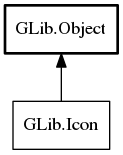

Icon
Object Hierarchy:
Description:
Icon is a very minimal interface for icons.
It provides functions for checking the equality of two icons, hashing of icons and serializing an icon to and from strings.
Icon does not provide the actual pixmap for the icon as this is out of GIO's scope, however implementations of Icon may contain the name of an icon (see ThemedIcon), or the path to an icon (see LoadableIcon).
To obtain a hash of a Icon, see hash.
To check if two Icons are equal, see equal.
For serializing a Icon, use serialize and deserialize.
If you want to consume Icon (for example, in a toolkit) you must be prepared to handle at least the three
following cases: LoadableIcon,
ThemedIcon and EmblemedIcon. It may also make sense to have fast-paths for other
cases (like handling GdkPixbuf directly, for example) but all compliant Icon implementations
outside of GIO must implement LoadableIcon.
If your application or library provides one or more Icon implementations you need to ensure that your new implementation also implements LoadableIcon. Additionally, you must provide an implementation of serialize that gives a result that is understood by deserialize, yielding one of the built-in icon types.
All known implementing classes:

All known sub-interfaces:
Namespace: GLib
Package: gio-2.0
Content:
Static methods:
Methods:
Inherited Members:
All known members inherited from class GLib.Object